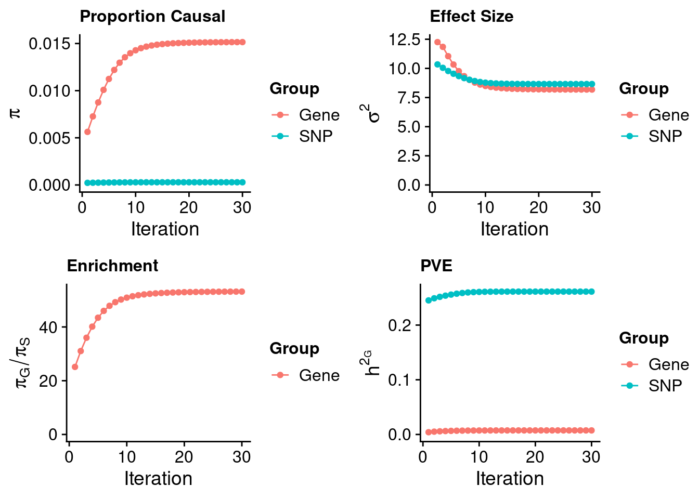
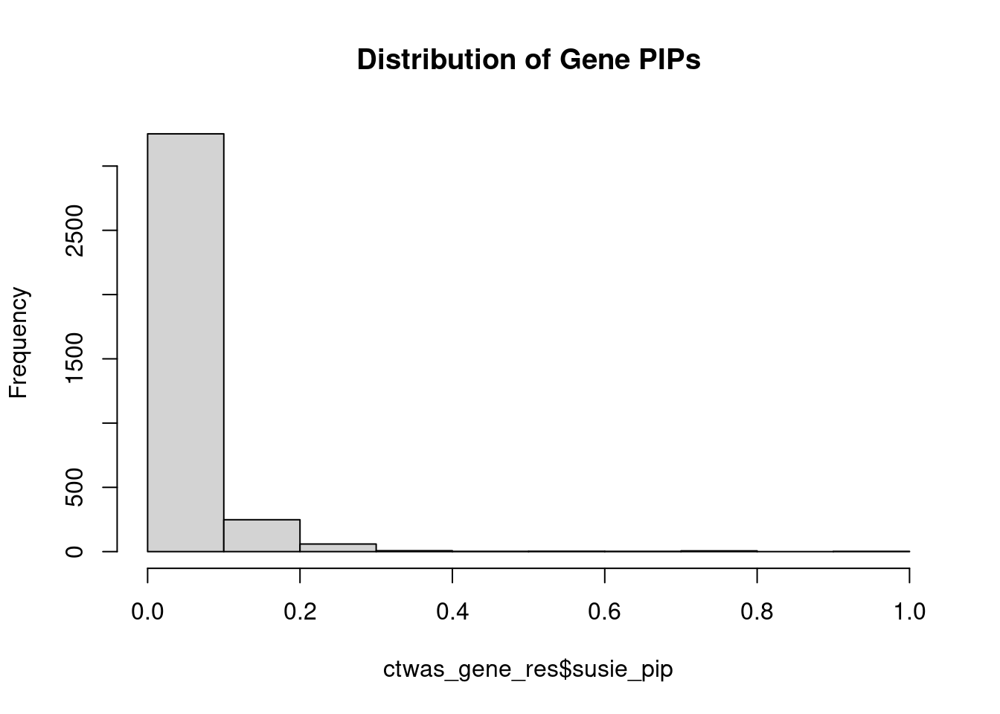
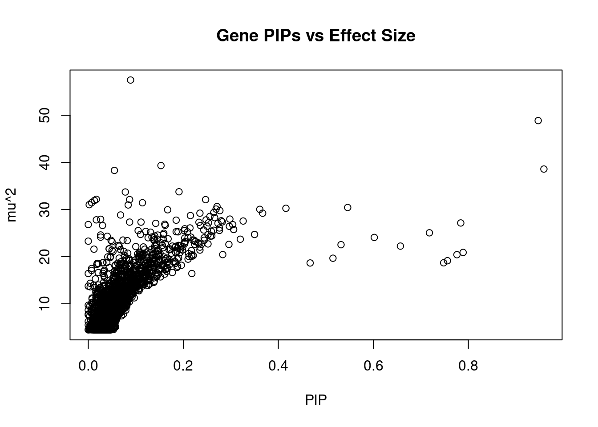
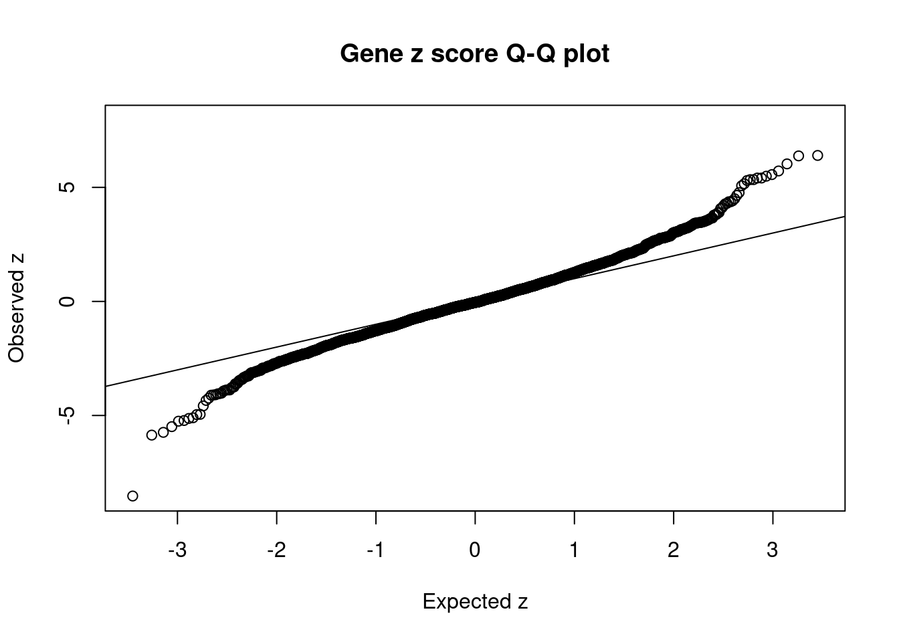
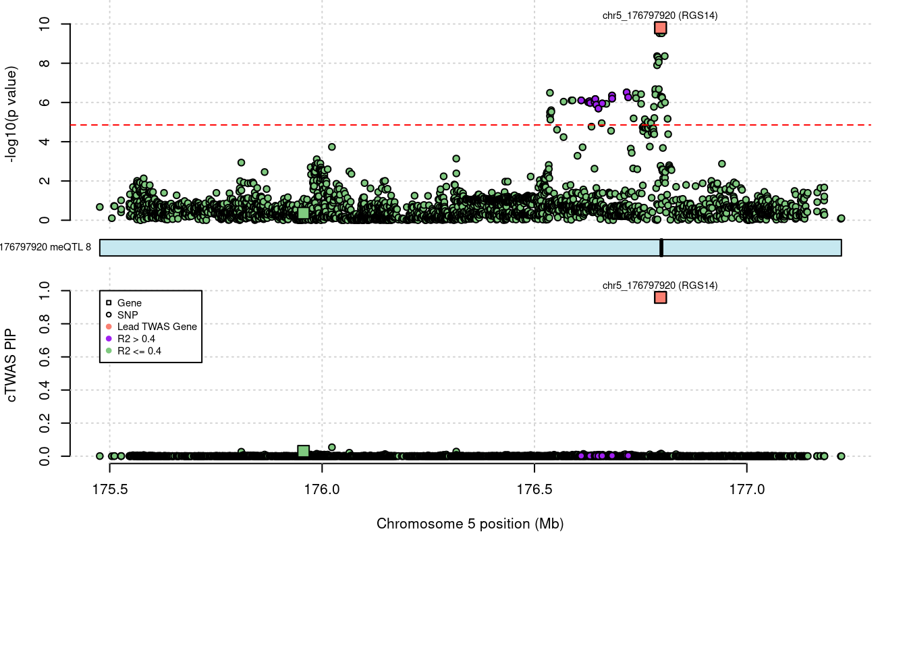
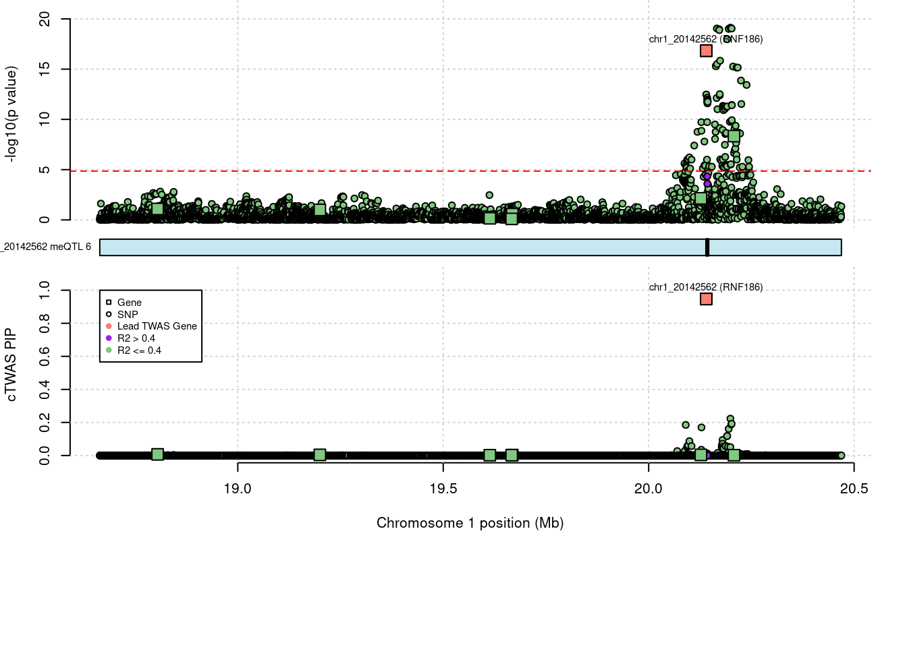
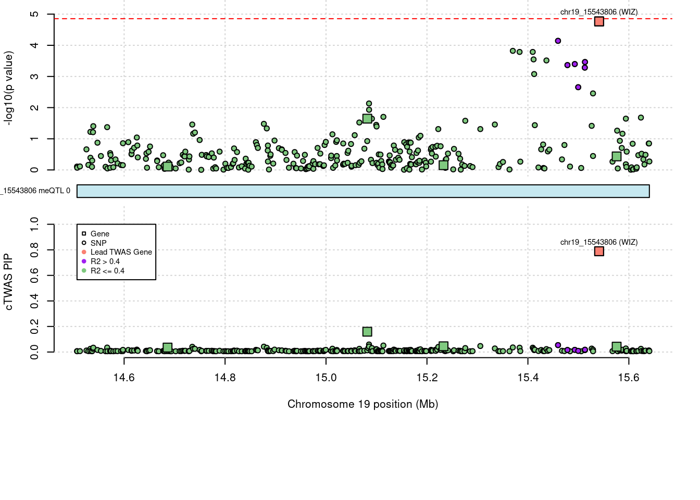

IBD-ME
sheng Qian
2021-8-31
Last updated: 2022-09-07
Checks: 5 2
Knit directory: cTWAS_analysis/
This reproducible R Markdown analysis was created with workflowr (version 1.7.0). The Checks tab describes the reproducibility checks that were applied when the results were created. The Past versions tab lists the development history.
The R Markdown is untracked by Git. To know which version of the R Markdown file created these results, you’ll want to first commit it to the Git repo. If you’re still working on the analysis, you can ignore this warning. When you’re finished, you can run wflow_publish to commit the R Markdown file and build the HTML.
Great job! The global environment was empty. Objects defined in the global environment can affect the analysis in your R Markdown file in unknown ways. For reproduciblity it’s best to always run the code in an empty environment.
The command set.seed(20211220) was run prior to running the code in the R Markdown file. Setting a seed ensures that any results that rely on randomness, e.g. subsampling or permutations, are reproducible.
Great job! Recording the operating system, R version, and package versions is critical for reproducibility.
Nice! There were no cached chunks for this analysis, so you can be confident that you successfully produced the results during this run.
Using absolute paths to the files within your workflowr project makes it difficult for you and others to run your code on a different machine. Change the absolute path(s) below to the suggested relative path(s) to make your code more reproducible.
| absolute | relative |
|---|---|
| /project2/xinhe/shengqian/cTWAS/cTWAS_analysis/data/IBD_ME/ | data/IBD_ME |
| /project2/xinhe/shengqian/cTWAS/cTWAS_analysis/code/ctwas_config_b37.R | code/ctwas_config_b37.R |
| /project2/xinhe/shengqian/cTWAS/cTWAS_analysis/data/UKBB/ebi-a-GCST004131.vcf.gz | data/UKBB/ebi-a-GCST004131.vcf.gz |
Great! You are using Git for version control. Tracking code development and connecting the code version to the results is critical for reproducibility.
The results in this page were generated with repository version 8fd8d21. See the Past versions tab to see a history of the changes made to the R Markdown and HTML files.
Note that you need to be careful to ensure that all relevant files for the analysis have been committed to Git prior to generating the results (you can use wflow_publish or wflow_git_commit). workflowr only checks the R Markdown file, but you know if there are other scripts or data files that it depends on. Below is the status of the Git repository when the results were generated:
Ignored files:
Ignored: .Rhistory
Ignored: .ipynb_checkpoints/
Untracked files:
Untracked: G_list.RData
Untracked: Rplot.png
Untracked: SCZ_annotation.xlsx
Untracked: analysis/.ipynb_checkpoints/
Untracked: analysis/IBD_ME_CpG_level_1kb.Rmd
Untracked: cache/
Untracked: code/.ipynb_checkpoints/
Untracked: data/.ipynb_checkpoints/
Untracked: data/FUMA_output/
Untracked: data/GO_Terms/
Untracked: data/IBD_ME/
Untracked: data/PGC3_SCZ_wave3_public.v2.tsv
Untracked: data/SCZ/
Untracked: data/SCZ_2014_EUR/
Untracked: data/SCZ_2014_EUR_ME/
Untracked: data/SCZ_2018/
Untracked: data/SCZ_2018_ME/
Untracked: data/SCZ_2018_S/
Untracked: data/SCZ_2020/
Untracked: data/SCZ_S/
Untracked: data/Supplementary Table 15 - MAGMA.xlsx
Untracked: data/Supplementary Table 20 - Prioritised Genes.xlsx
Untracked: data/T2D/
Untracked: data/UKBB/
Untracked: data/UKBB_SNPs_Info.text
Untracked: data/gene_OMIM.txt
Untracked: data/gene_pip_0.8.txt
Untracked: data/gwas_sumstats/
Untracked: data/magma.genes.out
Untracked: data/mashr_Heart_Atrial_Appendage.db
Untracked: data/mashr_sqtl/
Untracked: data/notes.txt
Untracked: data/scz_2018.RDS
Untracked: data/summary_known_genes_annotations.xlsx
Untracked: temp.regionlist.RDS
Untracked: temp.regions.txt
Untracked: temp.susieIrss.txt
Untracked: temp.temp.susieIrssres.Rd
Untracked: temp_LDR/
Untracked: temp_ld_R_chr1.txt
Untracked: temp_ld_R_chr10.txt
Untracked: temp_ld_R_chr11.txt
Untracked: temp_ld_R_chr12.txt
Untracked: temp_ld_R_chr13.txt
Untracked: temp_ld_R_chr14.txt
Untracked: temp_ld_R_chr15.txt
Untracked: temp_ld_R_chr16.txt
Untracked: temp_ld_R_chr17.txt
Untracked: temp_ld_R_chr18.txt
Untracked: temp_ld_R_chr19.txt
Untracked: temp_ld_R_chr2.txt
Untracked: temp_ld_R_chr20.txt
Untracked: temp_ld_R_chr21.txt
Untracked: temp_ld_R_chr22.txt
Untracked: temp_ld_R_chr3.txt
Untracked: temp_ld_R_chr4.txt
Untracked: temp_ld_R_chr5.txt
Untracked: temp_ld_R_chr6.txt
Untracked: temp_ld_R_chr7.txt
Untracked: temp_ld_R_chr8.txt
Untracked: temp_ld_R_chr9.txt
Untracked: temp_reg.txt
Untracked: top_genes_32.txt
Untracked: top_genes_37.txt
Untracked: top_genes_43.txt
Untracked: top_genes_54.txt
Untracked: top_genes_81.txt
Untracked: z_snp_pos_SCZ.RData
Untracked: z_snp_pos_SCZ_2014_EUR.RData
Untracked: z_snp_pos_SCZ_2018.RData
Untracked: z_snp_pos_SCZ_2020.RData
Unstaged changes:
Deleted: analysis/BMI_S_results.Rmd
Modified: analysis/IBD_ME_CpG_level.Rmd
Note that any generated files, e.g. HTML, png, CSS, etc., are not included in this status report because it is ok for generated content to have uncommitted changes.
There are no past versions. Publish this analysis with wflow_publish() to start tracking its development.
Weight QC
#number of imputed weights
nrow(qclist_all)[1] 3580#number of imputed weights by chromosome
table(qclist_all$chr)
1 2 3 4 5 6 7 8 9 10 11 12 13 14 15 16 17 18 19 20
555 224 141 118 136 214 198 136 28 194 207 142 62 79 83 109 234 31 427 114
21 22
50 98 #proportion of imputed weights without missing variants
mean(qclist_all$nmiss==0)[1] 0.1335library(reticulate)
use_python("/scratch/midway2/shengqian/miniconda3/envs/PythonForR/bin/python",required=T)finish
#estimated group prior
estimated_group_prior <- estimated_group_prior_all[,ncol(group_prior_rec)]
print(estimated_group_prior) gene snp
0.0151490 0.0002849 #estimated group prior variance
estimated_group_prior_var <- estimated_group_prior_var_all[,ncol(group_prior_var_rec)]
print(estimated_group_prior_var) gene snp
8.183 8.659 #estimated enrichment
estimated_enrichment <- estimated_enrichment_all[ncol(group_prior_var_rec)]
print(estimated_enrichment)[1] 53.17#report sample size
print(sample_size)[1] 59957#report group size
print(group_size)[1] 3580 6348060#estimated group PVE
estimated_group_pve <- estimated_group_pve_all[,ncol(group_prior_rec)] #check PVE calculation
print(estimated_group_pve) gene snp
0.007402 0.261223 #total PVE
sum(estimated_group_pve)[1] 0.2686#PVE attributable to gene expression
estimated_group_pve["gene"]/sum(estimated_group_pve) gene
0.02756 Genes with highest PIPs

genename region_tag chrom id pos susie_pip mu2
3565 RGS14 5_106 5 chr5_176797920 176796765 0.959 38.59
3560 RNF186 1_13 1 chr1_20142562 20140036 0.947 48.87
3008 WIZ 19_12 19 chr19_15543806 15541091 0.789 20.89
3571 OR12D2 6_23 6 chr6_29365078 29363697 0.784 27.15
3144 NaN 19_32 19 chr19_46382992 46382745 0.776 20.42
1134 WWC1 5_100 5 chr5_167718524 167717734 0.756 19.14
1496 SMURF1 7_61 7 chr7_98741946 98739231 0.748 18.70
3580 SLC26A3 7_66 7 chr7_107437656 107435465 0.718 25.06
2825 METRNL 17_47 17 chr17_81042782 81043039 0.657 22.24
374 DR1 1_57 1 chr1_93811570 93810649 0.602 24.08
1125 CAMK2A 5_88 5 chr5_149625104 149625087 0.546 30.43
1629 NaN 8_54 8 chr8_74282865 74281152 0.532 22.54
273 RP11-90C4.2 1_34 1 chr1_56394286 56391806 0.515 19.67
1223 NaN 6_24 6 chr6_29976071 29978027 0.467 18.66
252 LINC00505 1_29 1 chr1_46937902 46936423 0.416 30.26
2362 SAMD4A 14_23 14 chr14_55227154 55225186 0.367 29.22
3481 RFPL3 22_12 22 chr22_32749962 32747253 0.361 30.04
950 QDPR 4_17 4 chr4_17513338 17510707 0.350 24.71
1206 BTN3A3 6_20 6 chr6_26446387 26444862 0.326 27.56
1445 NaN 7_34 7 chr7_46400029 46398911 0.320 23.70
PVE z num_meqtl
3565 0.00062 6.40 8
3560 0.00077 -8.53 6
3008 0.00027 4.30 2
3571 0.00036 -5.74 1
3144 0.00026 -4.09 4
1134 0.00024 -3.93 3
1496 0.00023 3.08 2
3580 0.00030 5.56 3
2825 0.00024 -3.75 1
374 0.00024 4.77 4
1125 0.00028 5.41 2
1629 0.00020 -3.90 7
273 0.00017 -4.11 7
1223 0.00015 -1.79 1
252 0.00021 3.65 7
2362 0.00018 -3.27 4
3481 0.00018 -3.57 5
950 0.00014 -3.06 5
1206 0.00015 3.12 7
1445 0.00013 3.02 5Genes with largest effect sizes

genename region_tag chrom id pos susie_pip mu2
1349 RNASET2 6_109 6 chr6_167368657 167370230 0.089 57.48
3560 RNF186 1_13 1 chr1_20142562 20140036 0.947 48.87
2702 PPP1R1B 17_23 17 chr17_37793426 37790781 0.153 39.33
3565 RGS14 5_106 5 chr5_176797920 176796765 0.959 38.59
2512 IL27 16_23 16 chr16_28511362 28508447 0.055 38.30
2901 SBNO2 19_2 19 chr19_1174667 1175396 0.191 33.77
1818 ZMIZ1 10_51 10 chr10_81070689 81069413 0.078 33.72
2709 ORMDL3 17_23 17 chr17_38084377 38085791 0.017 32.17
807 APEH 3_35 3 chr3_49711089 49708502 0.087 32.11
3402 TPD52L2 20_38 20 chr20_62496515 62496511 0.247 32.10
2710 LRRC3C 17_23 17 chr17_38097707 38098027 0.013 31.92
1786 ZNF365 10_42 10 chr10_64397076 64395186 0.007 31.45
731 AAMP 2_129 2 chr2_219133847 219132731 0.114 31.44
3563 OTUD3 1_13 1 chr1_20210269 20207622 0.002 31.03
2511 SULT1A1 16_23 16 chr16_28622037 28621311 0.084 30.97
3264 BRSK1 19_38 19 chr19_55823827 55822165 0.271 30.63
1125 CAMK2A 5_88 5 chr5_149625104 149625087 0.546 30.43
252 LINC00505 1_29 1 chr1_46937902 46936423 0.416 30.26
2023 NEAT1 11_36 11 chr11_65195039 65195255 0.269 30.10
3481 RFPL3 22_12 22 chr22_32749962 32747253 0.361 30.04
PVE z num_meqtl
1349 8.6e-05 7.94 3
3560 7.7e-04 -8.53 6
2702 1.0e-04 -5.13 4
3565 6.2e-04 6.40 8
2512 3.5e-05 6.38 4
2901 1.1e-04 3.36 5
1818 4.4e-05 -4.58 4
2709 9.0e-06 5.72 1
807 4.6e-05 5.34 2
3402 1.3e-04 3.55 3
2710 7.1e-06 6.03 4
1786 3.8e-06 -2.93 4
731 6.0e-05 -5.49 4
3563 8.5e-07 -5.86 10
2511 4.4e-05 -5.25 1
3264 1.4e-04 3.44 3
1125 2.8e-04 5.41 2
252 2.1e-04 3.65 7
2023 1.3e-04 3.51 2
3481 1.8e-04 -3.57 5Genes with highest PVE
genename region_tag chrom id pos susie_pip mu2
3560 RNF186 1_13 1 chr1_20142562 20140036 0.947 48.87
3565 RGS14 5_106 5 chr5_176797920 176796765 0.959 38.59
3571 OR12D2 6_23 6 chr6_29365078 29363697 0.784 27.15
3580 SLC26A3 7_66 7 chr7_107437656 107435465 0.718 25.06
1125 CAMK2A 5_88 5 chr5_149625104 149625087 0.546 30.43
3008 WIZ 19_12 19 chr19_15543806 15541091 0.789 20.89
3144 NaN 19_32 19 chr19_46382992 46382745 0.776 20.42
374 DR1 1_57 1 chr1_93811570 93810649 0.602 24.08
1134 WWC1 5_100 5 chr5_167718524 167717734 0.756 19.14
2825 METRNL 17_47 17 chr17_81042782 81043039 0.657 22.24
1496 SMURF1 7_61 7 chr7_98741946 98739231 0.748 18.70
252 LINC00505 1_29 1 chr1_46937902 46936423 0.416 30.26
1629 NaN 8_54 8 chr8_74282865 74281152 0.532 22.54
2362 SAMD4A 14_23 14 chr14_55227154 55225186 0.367 29.22
3481 RFPL3 22_12 22 chr22_32749962 32747253 0.361 30.04
273 RP11-90C4.2 1_34 1 chr1_56394286 56391806 0.515 19.67
1206 BTN3A3 6_20 6 chr6_26446387 26444862 0.326 27.56
1223 NaN 6_24 6 chr6_29976071 29978027 0.467 18.66
950 QDPR 4_17 4 chr4_17513338 17510707 0.350 24.71
1716 NaN 9_62 9 chr9_124315614 124314010 0.298 27.97
PVE z num_meqtl
3560 0.00077 -8.53 6
3565 0.00062 6.40 8
3571 0.00036 -5.74 1
3580 0.00030 5.56 3
1125 0.00028 5.41 2
3008 0.00027 4.30 2
3144 0.00026 -4.09 4
374 0.00024 4.77 4
1134 0.00024 -3.93 3
2825 0.00024 -3.75 1
1496 0.00023 3.08 2
252 0.00021 3.65 7
1629 0.00020 -3.90 7
2362 0.00018 -3.27 4
3481 0.00018 -3.57 5
273 0.00017 -4.11 7
1206 0.00015 3.12 7
1223 0.00015 -1.79 1
950 0.00014 -3.06 5
1716 0.00014 -3.32 2Genes with largest z scores
genename region_tag chrom id pos susie_pip mu2 PVE
3560 RNF186 1_13 1 chr1_20142562 20140036 0.947 48.87 7.7e-04
1349 RNASET2 6_109 6 chr6_167368657 167370230 0.089 57.48 8.6e-05
3565 RGS14 5_106 5 chr5_176797920 176796765 0.959 38.59 6.2e-04
2512 IL27 16_23 16 chr16_28511362 28508447 0.055 38.30 3.5e-05
2710 LRRC3C 17_23 17 chr17_38097707 38098027 0.013 31.92 7.1e-06
3563 OTUD3 1_13 1 chr1_20210269 20207622 0.002 31.03 8.5e-07
3571 OR12D2 6_23 6 chr6_29365078 29363697 0.784 27.15 3.6e-04
2709 ORMDL3 17_23 17 chr17_38084377 38085791 0.017 32.17 9.0e-06
3580 SLC26A3 7_66 7 chr7_107437656 107435465 0.718 25.06 3.0e-04
731 AAMP 2_129 2 chr2_219133847 219132731 0.114 31.44 6.0e-05
1769 CCNY 10_26 10 chr10_35535785 35535311 0.030 26.62 1.3e-05
1109 P4HA2 5_79 5 chr5_131592959 131592870 0.021 18.54 6.5e-06
1125 CAMK2A 5_88 5 chr5_149625104 149625087 0.546 30.43 2.8e-04
589 C2orf74 2_40 2 chr2_61389282 61387388 0.026 24.60 1.1e-05
807 APEH 3_35 3 chr3_49711089 49708502 0.087 32.11 4.6e-05
590 C2orf74 2_40 2 chr2_61391174 61388355 0.026 24.14 1.0e-05
2511 SULT1A1 16_23 16 chr16_28622037 28621311 0.084 30.97 4.4e-05
3577 NaN 7_66 7 chr7_107483786 107480901 0.017 27.81 7.8e-06
3500 PDGFB 22_16 22 chr22_39641154 39639853 0.068 28.84 3.3e-05
2702 PPP1R1B 17_23 17 chr17_37793426 37790781 0.153 39.33 1.0e-04
z num_meqtl
3560 -8.53 6
1349 7.94 3
3565 6.40 8
2512 6.38 4
2710 6.03 4
3563 -5.86 10
3571 -5.74 1
2709 5.72 1
3580 5.56 3
731 -5.49 4
1769 5.49 3
1109 5.41 2
1125 5.41 2
589 5.34 8
807 5.34 2
590 5.30 6
2511 -5.25 1
3577 -5.22 4
3500 5.16 3
2702 -5.13 4Comparing z scores and PIPs

[1] 0.008659 genename region_tag chrom id pos susie_pip mu2 PVE
3560 RNF186 1_13 1 chr1_20142562 20140036 0.947 48.87 7.7e-04
1349 RNASET2 6_109 6 chr6_167368657 167370230 0.089 57.48 8.6e-05
3565 RGS14 5_106 5 chr5_176797920 176796765 0.959 38.59 6.2e-04
2512 IL27 16_23 16 chr16_28511362 28508447 0.055 38.30 3.5e-05
2710 LRRC3C 17_23 17 chr17_38097707 38098027 0.013 31.92 7.1e-06
3563 OTUD3 1_13 1 chr1_20210269 20207622 0.002 31.03 8.5e-07
3571 OR12D2 6_23 6 chr6_29365078 29363697 0.784 27.15 3.6e-04
2709 ORMDL3 17_23 17 chr17_38084377 38085791 0.017 32.17 9.0e-06
3580 SLC26A3 7_66 7 chr7_107437656 107435465 0.718 25.06 3.0e-04
731 AAMP 2_129 2 chr2_219133847 219132731 0.114 31.44 6.0e-05
1769 CCNY 10_26 10 chr10_35535785 35535311 0.030 26.62 1.3e-05
1109 P4HA2 5_79 5 chr5_131592959 131592870 0.021 18.54 6.5e-06
1125 CAMK2A 5_88 5 chr5_149625104 149625087 0.546 30.43 2.8e-04
589 C2orf74 2_40 2 chr2_61389282 61387388 0.026 24.60 1.1e-05
807 APEH 3_35 3 chr3_49711089 49708502 0.087 32.11 4.6e-05
590 C2orf74 2_40 2 chr2_61391174 61388355 0.026 24.14 1.0e-05
2511 SULT1A1 16_23 16 chr16_28622037 28621311 0.084 30.97 4.4e-05
3577 NaN 7_66 7 chr7_107483786 107480901 0.017 27.81 7.8e-06
3500 PDGFB 22_16 22 chr22_39641154 39639853 0.068 28.84 3.3e-05
2702 PPP1R1B 17_23 17 chr17_37793426 37790781 0.153 39.33 1.0e-04
z num_meqtl
3560 -8.53 6
1349 7.94 3
3565 6.40 8
2512 6.38 4
2710 6.03 4
3563 -5.86 10
3571 -5.74 1
2709 5.72 1
3580 5.56 3
731 -5.49 4
1769 5.49 3
1109 5.41 2
1125 5.41 2
589 5.34 8
807 5.34 2
590 5.30 6
2511 -5.25 1
3577 -5.22 4
3500 5.16 3
2702 -5.13 4Loading required package: S4VectorsLoading required package: stats4Loading required package: BiocGenerics
Attaching package: 'BiocGenerics'The following objects are masked from 'package:stats':
IQR, mad, sd, var, xtabsThe following objects are masked from 'package:base':
anyDuplicated, append, as.data.frame, basename, cbind, colnames,
dirname, do.call, duplicated, eval, evalq, Filter, Find, get, grep,
grepl, intersect, is.unsorted, lapply, Map, mapply, match, mget,
order, paste, pmax, pmax.int, pmin, pmin.int, Position, rank,
rbind, Reduce, rownames, sapply, setdiff, sort, table, tapply,
union, unique, unsplit, which.max, which.min
Attaching package: 'S4Vectors'The following object is masked from 'package:base':
expand.gridLoading required package: IRangesLoading required package: GenomicRangesLoading required package: GenomeInfoDbLoading required package: grida <- locus_plot_final_pub(region_tag="5_106", return_table=T,
focus=NULL,
label_genes=NULL,
rerun_ctwas=F,
rerun_load_only=F,
label_panel="both",
legend_side="left",
legend_panel="cTWAS")
a <- locus_plot_final_pub(region_tag="1_13", return_table=T,
focus=NULL,
label_genes=NULL,
rerun_ctwas=F,
rerun_load_only=F,
label_panel="both",
legend_side="left",
legend_panel="cTWAS")
a <- locus_plot_final_pub(region_tag="19_12", return_table=T,
focus=NULL,
label_genes=NULL,
rerun_ctwas=F,
rerun_load_only=F,
label_panel="both",
legend_side="left",
legend_panel="cTWAS")
sessionInfo()R version 4.1.0 (2021-05-18)
Platform: x86_64-pc-linux-gnu (64-bit)
Running under: Scientific Linux 7.4 (Nitrogen)
Matrix products: default
BLAS/LAPACK: /software/openblas-0.3.13-el7-x86_64/lib/libopenblas_haswellp-r0.3.13.so
locale:
[1] LC_CTYPE=en_US.UTF-8 LC_NUMERIC=C
[3] LC_TIME=en_US.UTF-8 LC_COLLATE=en_US.UTF-8
[5] LC_MONETARY=en_US.UTF-8 LC_MESSAGES=en_US.UTF-8
[7] LC_PAPER=en_US.UTF-8 LC_NAME=C
[9] LC_ADDRESS=C LC_TELEPHONE=C
[11] LC_MEASUREMENT=en_US.UTF-8 LC_IDENTIFICATION=C
attached base packages:
[1] grid stats4 stats graphics grDevices utils datasets
[8] methods base
other attached packages:
[1] Gviz_1.38.4 GenomicRanges_1.46.0 GenomeInfoDb_1.26.7
[4] IRanges_2.24.1 S4Vectors_0.28.1 BiocGenerics_0.40.0
[7] biomaRt_2.50.0 cowplot_1.1.1 ggplot2_3.3.6
[10] reticulate_1.26 workflowr_1.7.0
loaded via a namespace (and not attached):
[1] backports_1.2.1 Hmisc_4.5-0
[3] BiocFileCache_2.2.0 lazyeval_0.2.2
[5] splines_4.1.0 BiocParallel_1.28.0
[7] digest_0.6.29 ensembldb_2.18.4
[9] htmltools_0.5.3 fansi_1.0.3
[11] magrittr_2.0.3 checkmate_2.0.0
[13] memoise_2.0.1 BSgenome_1.62.0
[15] cluster_2.1.2 Biostrings_2.62.0
[17] matrixStats_0.62.0 prettyunits_1.1.1
[19] jpeg_0.1-8.1 colorspace_2.0-3
[21] blob_1.2.3 rappdirs_0.3.3
[23] xfun_0.24 dplyr_1.0.9
[25] callr_3.7.0 crayon_1.5.1
[27] RCurl_1.98-1.6 jsonlite_1.8.0
[29] survival_3.2-11 VariantAnnotation_1.40.0
[31] glue_1.6.2 gtable_0.3.0
[33] zlibbioc_1.40.0 XVector_0.34.0
[35] DelayedArray_0.20.0 scales_1.2.0
[37] DBI_1.1.2 Rcpp_1.0.9
[39] progress_1.2.2 htmlTable_2.2.1
[41] foreign_0.8-81 bit_4.0.4
[43] Formula_1.2-4 htmlwidgets_1.5.3
[45] httr_1.4.3 RColorBrewer_1.1-3
[47] ellipsis_0.3.2 pkgconfig_2.0.3
[49] XML_3.99-0.6 farver_2.1.0
[51] nnet_7.3-16 sass_0.4.0
[53] dbplyr_2.1.1 utf8_1.2.2
[55] here_1.0.1 tidyselect_1.1.2
[57] labeling_0.4.2 rlang_1.0.4
[59] later_1.2.0 AnnotationDbi_1.56.1
[61] munsell_0.5.0 tools_4.1.0
[63] cachem_1.0.6 cli_3.3.0
[65] generics_0.1.2 RSQLite_2.2.14
[67] evaluate_0.15 stringr_1.4.0
[69] fastmap_1.1.0 yaml_2.2.1
[71] processx_3.5.3 knitr_1.33
[73] bit64_4.0.5 fs_1.5.2
[75] purrr_0.3.4 KEGGREST_1.34.0
[77] AnnotationFilter_1.18.0 whisker_0.4
[79] xml2_1.3.2 compiler_4.1.0
[81] rstudioapi_0.13 filelock_1.0.2
[83] curl_4.3.2 png_0.1-7
[85] tibble_3.1.7 bslib_0.4.0
[87] stringi_1.7.6 highr_0.9
[89] ps_1.7.0 GenomicFeatures_1.46.1
[91] lattice_0.20-44 ProtGenerics_1.26.0
[93] Matrix_1.3-3 vctrs_0.4.1
[95] pillar_1.7.0 lifecycle_1.0.1
[97] jquerylib_0.1.4 data.table_1.14.2
[99] bitops_1.0-7 httpuv_1.6.1
[101] rtracklayer_1.54.0 R6_2.5.1
[103] BiocIO_1.4.0 latticeExtra_0.6-29
[105] promises_1.2.0.1 gridExtra_2.3
[107] dichromat_2.0-0.1 assertthat_0.2.1
[109] SummarizedExperiment_1.24.0 rprojroot_2.0.3
[111] rjson_0.2.20 withr_2.5.0
[113] GenomicAlignments_1.30.0 Rsamtools_2.10.0
[115] GenomeInfoDbData_1.2.7 parallel_4.1.0
[117] hms_1.1.1 rpart_4.1-15
[119] rmarkdown_2.9 MatrixGenerics_1.6.0
[121] git2r_0.28.0 biovizBase_1.42.0
[123] getPass_0.2-2 Biobase_2.54.0
[125] base64enc_0.1-3 restfulr_0.0.13